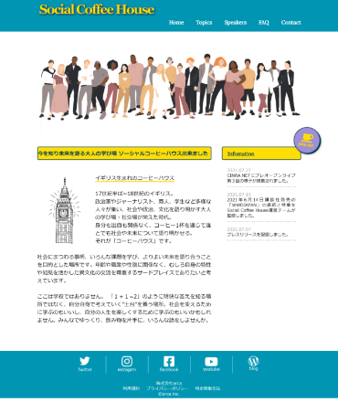
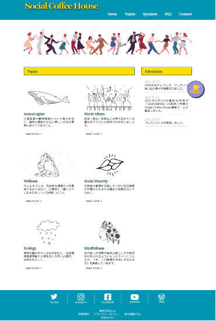
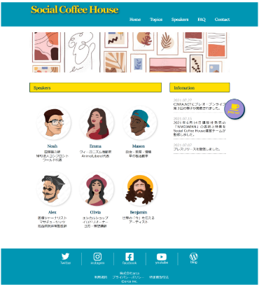

サイト概要
様々なトピックを多様な視点で共有し目を向けることで社会をよくすることを目指すオンラインコミュニティ。視野を広くし生きやすい環境を創り出す場の紹介、運営。
ターゲット
社会問題に意識の高い20~30代男女
ゴール
環境・人権・政治等の社会問題、メンタルヘルス等の思考法に目を向け知識を深める。
一人ではアクションを起こせなかったり、何から始めれば良いか分からないという層にリーチし同じ志を持った仲間との横の繋がりを広げる。
使用ツール
XD/Photoshop/Google Fonts
デザインコンセプト
未来を担う、現役世代の中でも比較的若い層をターゲットにするため 目を引くポップなカラーとイラストを用いた親しみやすいデザイン
振り返り
初めて制作した作品。 レイアウトの規定がある中で世界観を演出するための素材選びやフォント、配色にこだわりました。 文章コンテンツやモノクロのパートがのっぺりした印象になり、読ませる工夫などが課題と感じました。


